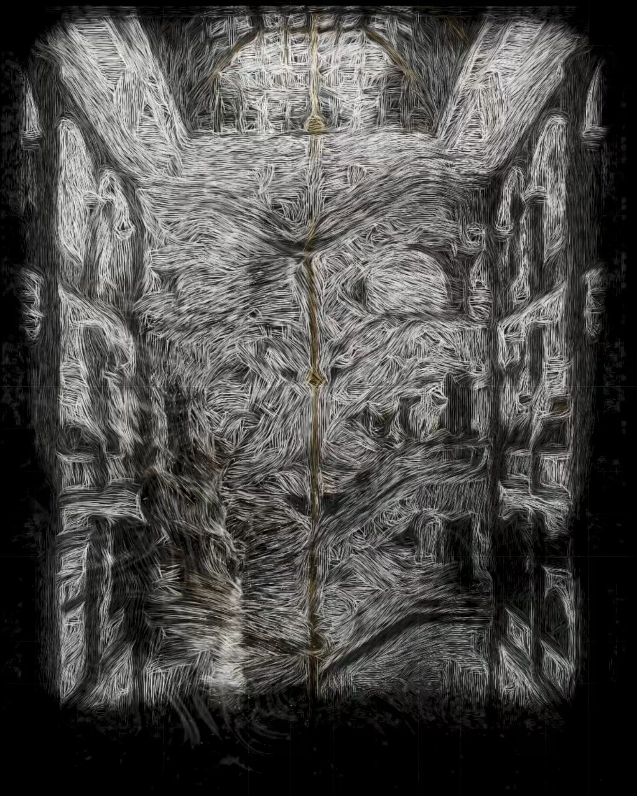
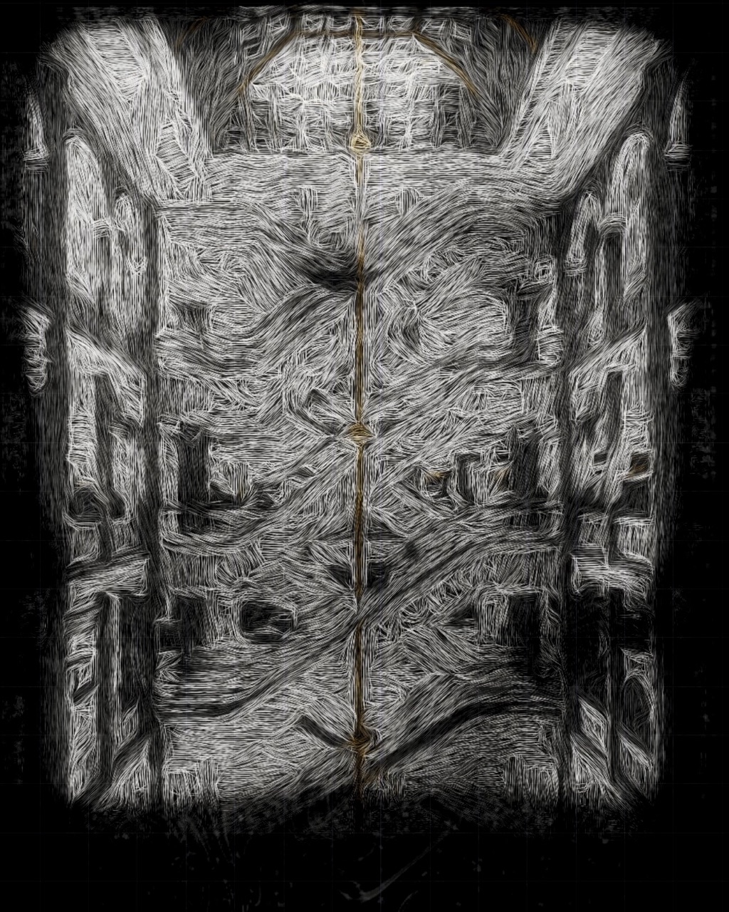
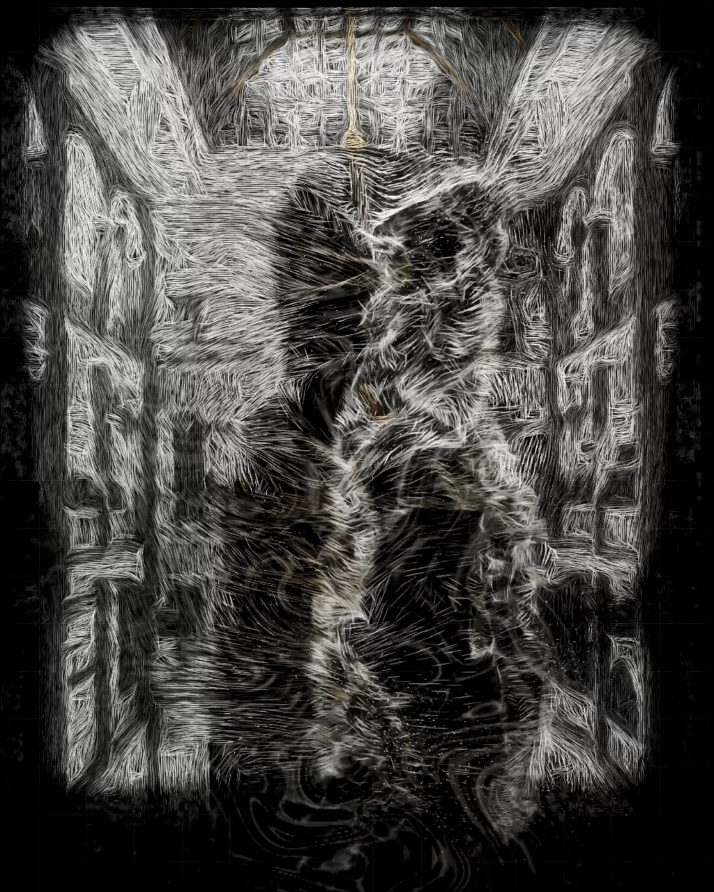
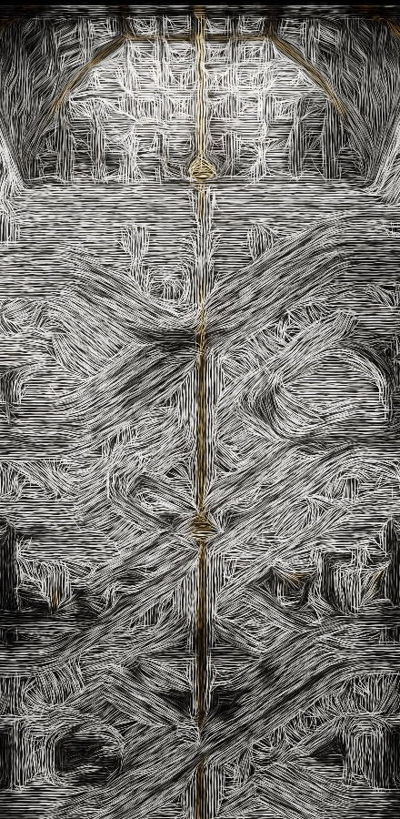

Et værk til atriet i Illum
Det her er en prototype, jeg har bygget til jeres atrium. Rummet er tegnet op i tusindvis af tynde tråde af lys. Når man bevæger sig foran det, fletter trådene sig ud og bliver til fint støv, og når man står stille igen, samler det hele sig.
Prøvet af derhjemme
Her står jeg foran et helt almindeligt webcam. Øverst er kameraet, og nederst er værket. Det reagerer med det samme, og det ser aldrig helt ens ud to gange.



Værket er lavet ud fra jeres eget atrium og holder sig til jeres farver, sort, hvid og guld. Guldet lyser kun der, hvor rummet selv er gyldent, i midteraksen og i ribberne under glasloftet.
Der er ikke noget at trykke på, og ingen behøver at få det forklaret. Man opdager det, når man går forbi. Jeg tror, det er den slags, folk bliver stående ved, prøver igen og filmer.
Det kræver ikke meget. En skærm, et kamera og en computer. Jeg tilpasser det til den skærm eller væg, der passer bedst til rummet, og det kan stå i en periode, følge en kampagne eller blive stående.